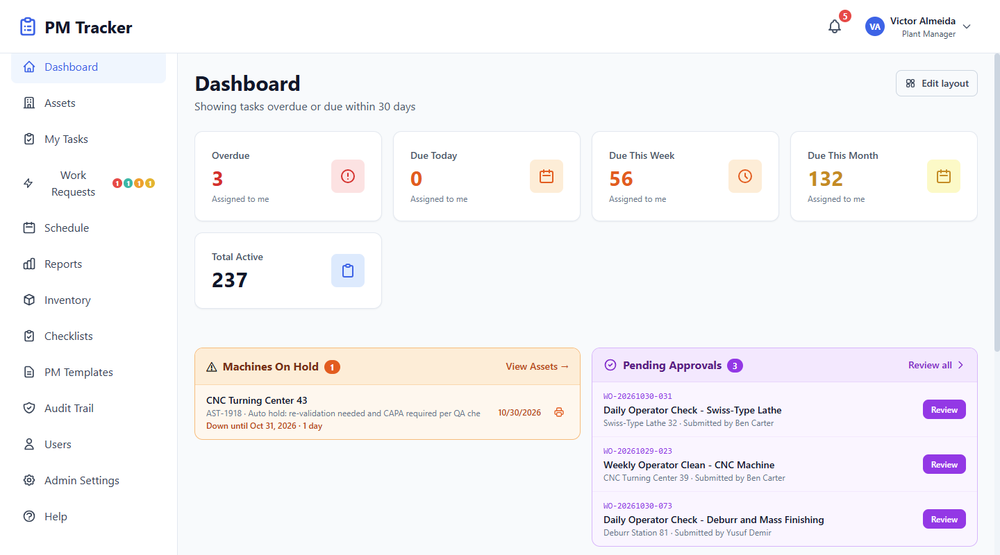
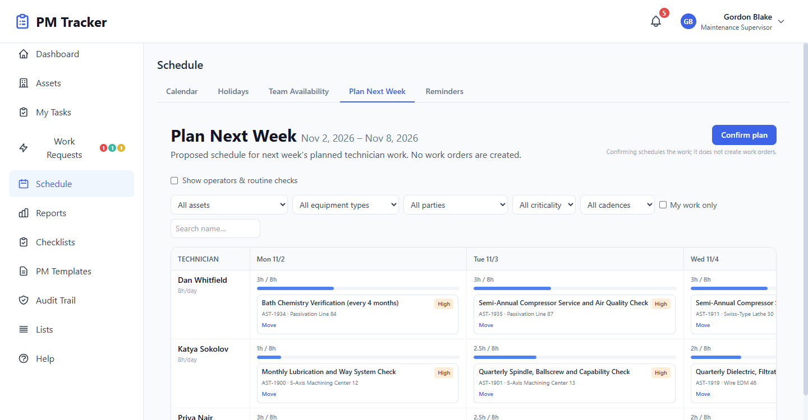
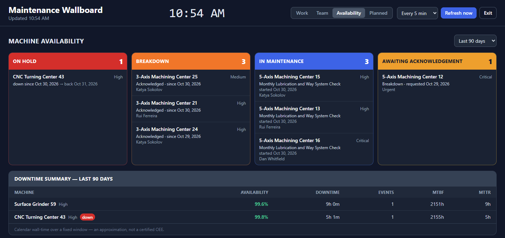
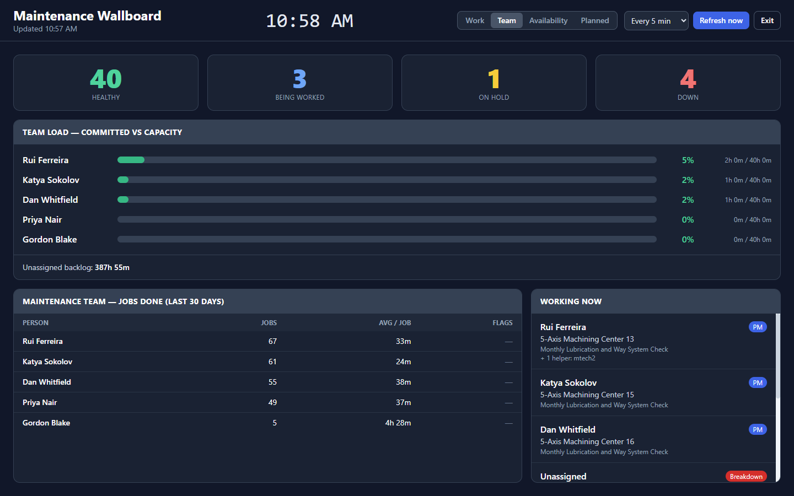
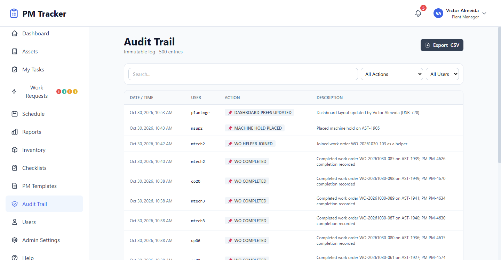

Forge + PM Tracker
Forge + PM TrackerPM Tracker maintenance software
Get your PMs off paper and your records out of Excel.
A self-hosted maintenance system for manufacturers regulated by the FDA, EMA and Health Canada. Free for up to 5 machines, and the first 6 months are free for bigger plants.

Does this sound familiar?
PMs are on paper
Sheets get lost or filled in late, and signed copies end up in a binder. In PM Tracker, technicians work through the checklist on screen and it saves as they go.
Records live in Excel
Anyone can overwrite a cell, and nobody can tell who did. PM Tracker logs every action in an append-only audit trail.
Tracking is the real problem
Finding out what's overdue means asking around. The dashboard and live board show it to everyone.
You've never used maintenance software
You don't need a CMMS background. Import your asset and PM lists, and start with up to 5 machines free.
Plan the week. Keep the floor in view.
Drag-and-drop planning
Supervisors pick up a PM and drop it where it fits, as the week changes.
Auto scheduling
If nobody has planned the week, PM Tracker schedules the work and marks it as auto-scheduled, so you can tell it wasn't reviewed.
Live board
A wall display of work due, your team, machine availability and planned downtime. It refreshes by itself.


From schedule to reviewed record
PMs and checklists
Build reusable PM templates, with checklists for each task.
Work orders
Work saves as it goes, and supervisors approve it when it's done.
Breakdown requests
Report a breakdown, get it repaired, then send it for QA review.
Machine holds
Take a machine out of service when needed, and lift the hold when it's ready.
Spare parts
Track the spares your team uses and what's left in stock.
Reports and history
Maintenance cost reports and a printable history for each machine.
Also included
- Team availability and personal schedules
- Notifications and personal reminders
- Asset and PM imports, so you don't start from a blank system
- File attachments and printable work orders
A look inside


Built for regulated plants
Append-only audit trail
Every action is logged and can't be edited afterwards. It's designed to support your validation.
Permissions by role
Access follows each person's level and discipline, such as maintenance or quality.
Self-hosted
Install it on your own server. Licenses are checked locally, so nothing phones home.
Questions we expect
Does PM Tracker need the internet?
Normal operation doesn't depend on any outside service.
Is it validated out of the box?
No. Validation is always specific to your site, and your team owns it. Talk to us about what you need.
Do we need Forge to use it?
No. PM Tracker is sold on its own. It's also the maintenance module inside Forge, for shops that want both in one system.
How much does it cost?
Up to 5 machines are free. Above that, you pay per machine per month. See pricing and the calculator.